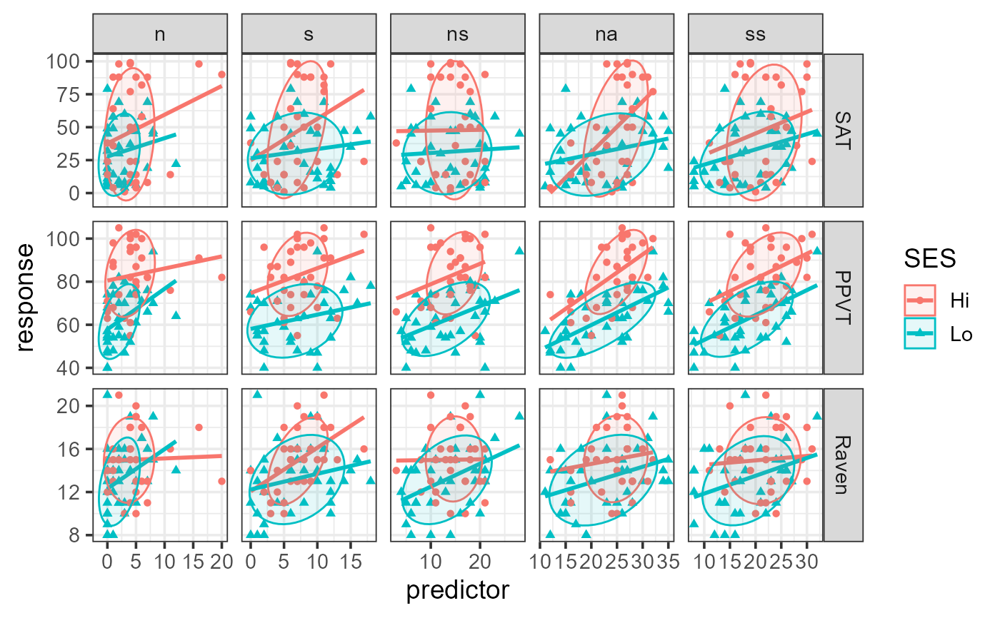
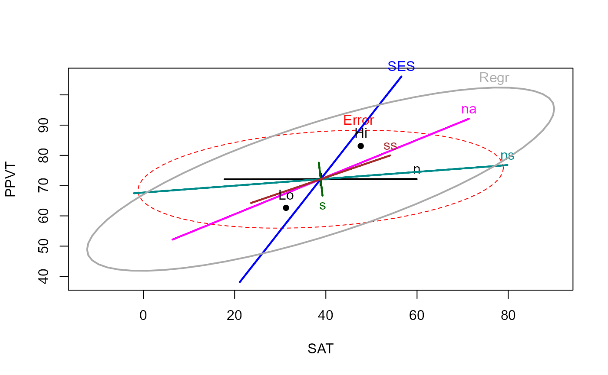
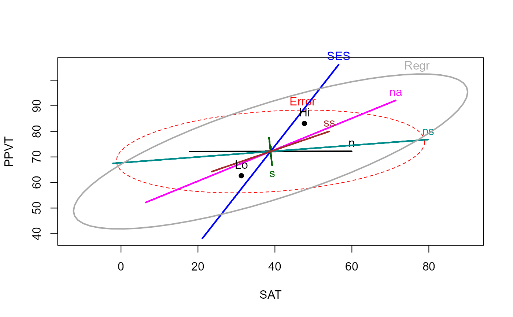

Data from an experiment by William D. Rohwer on kindergarten children designed to examine how well performance on a set of paired-associate (PA) tasks can predict performance on some measures of aptitude and achievement.
Format
A data frame with 69 observations on the following 10 variables.
groupa numeric vector, corresponding to SES
SESSocioeconomic status, a factor with levels
HiLoSATa numeric vector: score on a Student Achievement Test
PPVTa numeric vector: score on the Peabody Picture Vocabulary Test
Ravena numeric vector: score on the Raven Progressive Matrices Test
na numeric vector: performance on a 'named' PA task
sa numeric vector: performance on a 'still' PA task
nsa numeric vector: performance on a 'named still' PA task
naa numeric vector: performance on a 'named action' PA task
ssa numeric vector: performance on a 'sentence still' PA task
Source
Timm, N.H. 1975). Multivariate Analysis with Applications in Education and Psychology. Wadsworth (Brooks/Cole), Examples 4.3 (p. 281), 4.7 (p. 313), 4.13 (p. 344).
Details
The variables SAT, PPVT and Raven are responses to be
potentially explained by performance on the paired-associate (PA) learning
tasks, n, s, ns, na, and ss,
which differed in the syntactic and semantic relationship between the stimulus and response words in each pair.
Timm (1975) does not give a source, but the most relevant studies are Rowher & Ammons (1968) and Rohwer & Levin (1971). The paired-associate tasks are described as:
n(named): Simple paired-associate task where participants learn pairs of nouns with no additional context
s(sentence): Participants learn pairs embedded within a sentence
ns(named sentence): A combination where participants learn noun pairs with sentence context
na(named action): Pairs are learned with an action relationship between them
ss(sentence still): Similar to the sentence condition but with static presentation
References
Friendly, M. (2007). HE plots for Multivariate General Linear Models. Journal of Computational and Graphical Statistics, 16(2) 421–444. http://datavis.ca/papers/jcgs-heplots.pdf
Rohwer, W.D., Jr., & Levin, J.R. (1968). Action, meaning and stimulus selection in paired-associate learning. Journal of Verbal Learning and Verbal Behavior, 7: 137-141.
Rohwer, W. D., Jr., & Ammons, M. S. (1971). Elaboration training and paired-associate learning efficiency in children. Journal of Educational Psychology, 62(5), 376-383.
Examples
str(Rohwer)
#> 'data.frame': 69 obs. of 10 variables:
#> $ group: int 1 1 1 1 1 1 1 1 1 1 ...
#> $ SES : Factor w/ 2 levels "Hi","Lo": 2 2 2 2 2 2 2 2 2 2 ...
#> $ SAT : int 49 47 11 9 69 35 6 8 49 8 ...
#> $ PPVT : int 48 76 40 52 63 82 71 68 74 70 ...
#> $ Raven: int 8 13 13 9 15 14 21 8 11 15 ...
#> $ n : int 1 5 0 0 2 2 0 0 0 3 ...
#> $ s : int 2 14 10 2 7 15 1 0 0 2 ...
#> $ ns : int 6 14 21 5 11 21 20 10 7 21 ...
#> $ na : int 12 30 16 17 26 34 23 19 16 26 ...
#> $ ss : int 16 27 16 8 17 25 18 14 13 25 ...
# Plot responses against each predictor
library(tidyr)
library(dplyr)
#>
#> Attaching package: 'dplyr'
#> The following object is masked from 'package:car':
#>
#> recode
#> The following objects are masked from 'package:stats':
#>
#> filter, lag
#> The following objects are masked from 'package:base':
#>
#> intersect, setdiff, setequal, union
library(ggplot2)
#> Warning: package 'ggplot2' was built under R version 4.4.3
yvars <- c("SAT", "PPVT", "Raven" )
xvars <- c("n", "s", "ns", "na", "ss")
Rohwer_long <- Rohwer %>%
pivot_longer(cols = all_of(xvars), names_to = "xvar", values_to = "x") |>
pivot_longer(cols = all_of(yvars), names_to = "yvar", values_to = "y") |>
mutate(xvar = factor(xvar, xvars), yvar = factor(yvar, yvars))
ggplot(Rohwer_long, aes(x, y, color = SES, shape = SES, fill = SES)) +
geom_point() +
geom_smooth(method = "lm", se = FALSE, formula = y ~ x) +
stat_ellipse(geom = "polygon", level = 0.68, alpha = 0.1) +
facet_grid(yvar ~ xvar, scales = "free") +
labs(x = "predictor", y = "response") +
theme_bw(base_size = 14)

## ANCOVA, assuming equal slopes
rohwer.mod <- lm(cbind(SAT, PPVT, Raven) ~ SES + n + s + ns + na + ss, data=Rohwer)
car::Anova(rohwer.mod)
#>
#> Type II MANOVA Tests: Pillai test statistic
#> Df test stat approx F num Df den Df Pr(>F)
#> SES 1 0.37853 12.1818 3 60 2.507e-06 ***
#> n 1 0.04030 0.8400 3 60 0.477330
#> s 1 0.09271 2.0437 3 60 0.117307
#> ns 1 0.19283 4.7779 3 60 0.004729 **
#> na 1 0.23134 6.0194 3 60 0.001181 **
#> ss 1 0.04990 1.0504 3 60 0.376988
#> ---
#> Signif. codes: 0 '***' 0.001 '**' 0.01 '*' 0.05 '.' 0.1 ' ' 1
# Visualize the ANCOVA model
heplot(rohwer.mod)
 # Add ellipse to test all 5 regressors
heplot(rohwer.mod, hypotheses=list("Regr" = c("n", "s", "ns", "na", "ss")))

# View all pairs
pairs(rohwer.mod, hypotheses=list("Regr" = c("n", "s", "ns", "na", "ss")))
# Add ellipse to test all 5 regressors
heplot(rohwer.mod, hypotheses=list("Regr" = c("n", "s", "ns", "na", "ss")))

# View all pairs
pairs(rohwer.mod, hypotheses=list("Regr" = c("n", "s", "ns", "na", "ss")))
 # or 3D plot
if (FALSE) { # \dontrun{
col <- c("red", "green3", "blue", "cyan", "magenta", "brown", "gray")
heplot3d(rohwer.mod, hypotheses=list("Regr" = c("n", "s", "ns", "na", "ss")),
col=col, wire=FALSE)
} # }
## fit separate, independent models for Lo/Hi SES
rohwer.ses1 <- lm(cbind(SAT, PPVT, Raven) ~ n + s + ns + na + ss, data=Rohwer, subset=SES=="Hi")
rohwer.ses2 <- lm(cbind(SAT, PPVT, Raven) ~ n + s + ns + na + ss, data=Rohwer, subset=SES=="Lo")
# overlay the separate HE plots
heplot(rohwer.ses1, ylim=c(40,110),col=c("red", "black"))
heplot(rohwer.ses2, add=TRUE, col=c("blue", "black"), grand.mean=TRUE, error.ellipse=TRUE)
# or 3D plot
if (FALSE) { # \dontrun{
col <- c("red", "green3", "blue", "cyan", "magenta", "brown", "gray")
heplot3d(rohwer.mod, hypotheses=list("Regr" = c("n", "s", "ns", "na", "ss")),
col=col, wire=FALSE)
} # }
## fit separate, independent models for Lo/Hi SES
rohwer.ses1 <- lm(cbind(SAT, PPVT, Raven) ~ n + s + ns + na + ss, data=Rohwer, subset=SES=="Hi")
rohwer.ses2 <- lm(cbind(SAT, PPVT, Raven) ~ n + s + ns + na + ss, data=Rohwer, subset=SES=="Lo")
# overlay the separate HE plots
heplot(rohwer.ses1, ylim=c(40,110),col=c("red", "black"))
heplot(rohwer.ses2, add=TRUE, col=c("blue", "black"), grand.mean=TRUE, error.ellipse=TRUE)